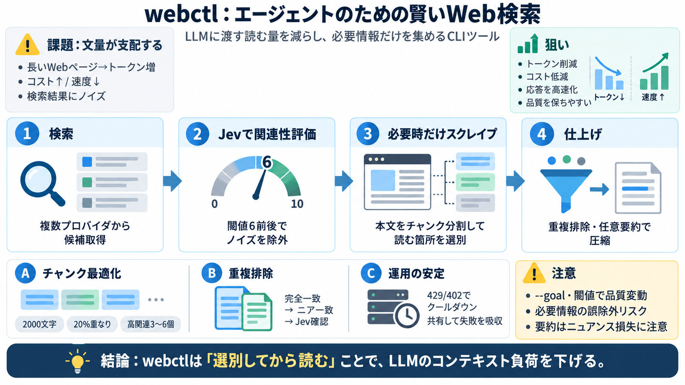

GitHub - cosinusalpha/webctl: Browser automation via CLI — for humans and agents · GitHub
| Task | webctl | agent-browser | --- | Score | Turns | Tokens | Cost | Score | Turns | Tokens | Cost | | Amazon produ…

| 段階 | 何をする |
|---|---|
| i 検索 | 複数プロバイダの結果を集約（例: 約25件の候補を受ける想定） |
| ii 関連性評価 | 各結果をJevで0〜10点評価し、閾値（デフォルト6）で残す |
| iii スクレイプ | 必要なら本文取得し、全投下せず「チャンク単位」でJev判定 |
| iv 仕上げ | 重複排除（完全一致→ニア一致）と要約（--summarize）をオプションで実行 |
| Task | webctl | agent-browser | --- | Score | Turns | Tokens | Cost | Score | Turns | Tokens | Cost | | Amazon produ…
#### About © 2026 MCP Market. All rights reserved.·Privacy·Terms [...] Jev Browser is a powerful tool designed for adva…
The smaller context also reduced output tokens by 52.97% on average, likely because the agent had less irrelevant materi…
> 💡 System One models evaluate every question in a request in parallel. Adding questions barely changes the response tim…
JavaScript is disabled in your browser. enable it to enjoy the full features of Tracxn. Tracxn.com Android Apple Chrome…